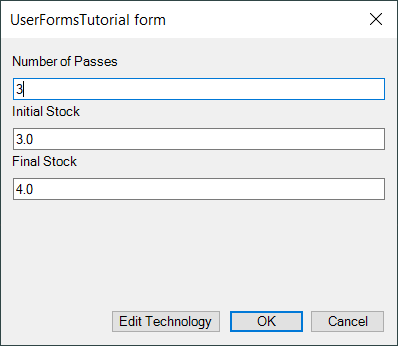

This tutorial shows the key points how forms can be integrated into ESPRIT EDGE code, how to use different types of controls and actually turn processing of the program over to the form.
Just like the objects in ESPRIT EDGE, forms and the controls on forms all have properties, methods, and events.
This tutorial works with a simple form that only asks for the Number of Passes, Initial Stock, and Final Stock, and gives the user a button to Edit Technology, and for OK and Cancel:

Set the properties of each control to the following values:
| Object Type | Name | Properties |
|---|---|---|
| UserForm | frmUserFormsTutorial | Caption = Multi Pass Contour |
| Label | lblNumberOfPasses | Caption = Number of Passes |
| Label | lblInitialStock | Caption = Initial Stock |
| Label | lblFinalStock | Caption = Final Stock |
| TextBox | txtNumberOfPasses | TextAlign = 3 - fmTextAlignRight |
| TextBox | txtInitialStock | TextAlign = 3 - fmTextAlignRight |
| TextBox | txtFinalStock | TextAlign = 3 - fmTextAlignRight |
| CommandButton | cmdEditTechnology | Caption = Edit Technology |
| CommandButton | cmdOK | Caption = OK |
| CommandButton | cmdCancel | Caption = Cancel |
The (Name) property is the most critical property of each control, as well as of the form itself, because it is by this name that we refer to the control.
Arrange the control on the form and align them if you like. When you are finished, assosiate the following event procedures with the form:
To launch the tutorial execute the following code in your main procedure: